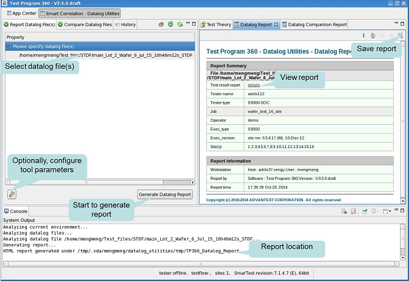
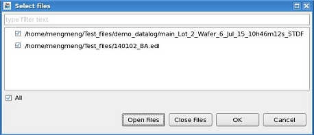

Report Datalog Files
Reports the content of data log (STDF or EDL) files by generating an HTML report.
About this task
The following screenshot shows the layout of the Report Datalog Files.

Report Datalog Files helps you easily view the STDF or EDL files.
The input is one or more data log files.
The output is an HTML report, including test result summary, test result for each device/die, wafer map, bin summary, shmoo info, and failure summary.
Before you begin
Make sure:
- You use the "S&S_TP360_Plus_SOC " license.
- You have one or more valid data log (EDL or STDF) files.
Procedure
-
Select the Report Datalog File(s) tab, and click the
 icon or double click the words in the Please specify datalog(EDL or STDF)
file(s) to review row.
icon or double click the words in the Please specify datalog(EDL or STDF)
file(s) to review row.
A new window opens, from which you can select one or more data log files:

-
(Optional) Click the
 icon to open the Preference page on Report Datalog Files to configure the data log report.
icon to open the Preference page on Report Datalog Files to configure the data log report.
Results
The HTML report is displayed in the Datalog Report view. By default, it is generated in
the directory:
/tmp/.vda/username/datalog_utilities/tmp/TP360_Datalog_Report/. You can
save the report to a different directory by clicking the  icon in the report view.
icon in the report view.
Refer to Viewing the data log report to get a detailed explanation about the report.
Functional changes
- Introduced in SmarTest 7.3.2